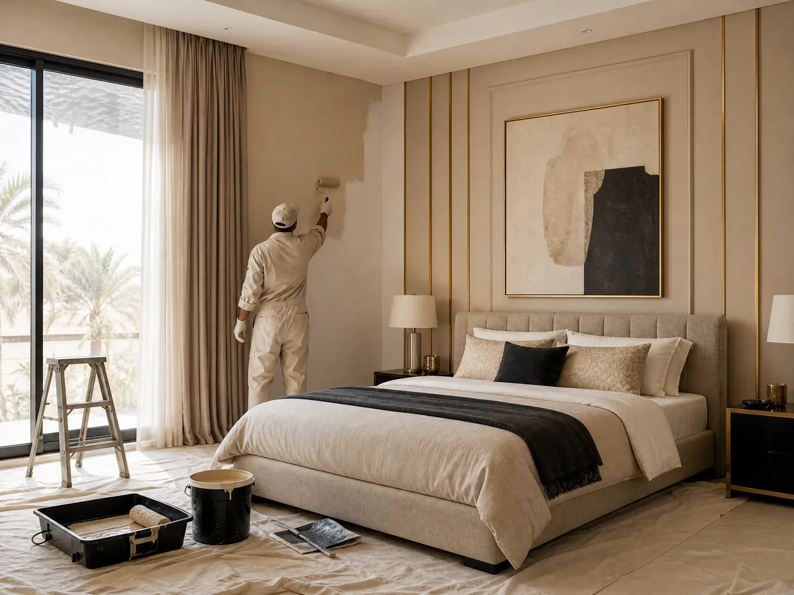

نصائح لاختيار أفضل معلم بوية شمال الرياض 053 116 9312
البحث عن معلم بوية شمال الرياض خطوة مهمة لكل من يرغب في تجديد منزله والحصول على جدران أنيقة وألوان تعكس ذوقه، فاختيار الدهان المناسب وطريقة التشطيب يؤثران في مظهر الغرف وشعورك بالراحة داخلها، لذلك من المهم تحديد احتياجاتك قبل اتخاذ القرار.
ولا يتوقف جمال المنزل على لون الجدران وحده بل يتكامل مع الأسقف والإضاءة والخامات المستخدمة في التفاصيل الداخلية، وهنا تظهر أهمية اختيار عناصر الديكور بعناية حتى تحصل على مساحة متناسقة تجمع بين العملية والأناقة، وإذا كنت تخطط لتجديد منزلك في الرياض، فإن تحديد الأعمال المطلوبة والتواصل مع الجهة المناسبة يساعدانك على الوصول إلى نتيجة أقرب إلى تصورك.
معلم بوية شمال الرياض
عند البحث عن معلم بوية شمال الرياض لا تجعل قرارك مبنيا على السعر وحده، بل اهتم بطبيعة العمل المطلوب ومستوى التشطيب وتناسق الألوان مع الأثاث والإضاءة، فالتفاصيل الصغيرة هي التي تصنع الفارق في المظهر النهائي:
- تحديد نطاق العمل: ابدأ بتوضيح ما تحتاج إليه، سواء كان تجديد ألوان الجدران أو تنسيق الديكور الداخلي أو تحديث مظهر غرفة معينة، حتى تتمكن من مقارنة العروض المناسبة لاحتياجاتك.
- اختيار الألوان بعناية: راع مساحة الغرفة وكمية الضوء الطبيعي وألوان الأثاث، فالألوان الفاتحة قد تمنح المكان إحساسا بالاتساع، بينما تضيف الدرجات الداكنة حضورا واضحا عند استخدامها بتوازن.
- الاهتمام بتجهيز الأسطح: إذا كان مشروعك يتضمن أعمال دهان، فمن المهم الاستفسار عن تجهيز الجدران ومعالجة العيوب قبل وضع الطلاء، لأن حالة السطح تؤثر في انتظام النتيجة النهائية.
- الاتفاق على تفاصيل التنفيذ: وضح المساحات المطلوبة ونوع الخامة والموعد المتوقع والتكلفة قبل بدء العمل، حتى تكون جميع التفاصيل مفهومة للطرفين.
- تنسيق الدهان مع الديكور: لا تختَر اللون بمعزل عن بقية عناصر الغرفة، بل انظر إلى علاقته بالأرضيات والأسقف والتكسيات والإضاءة لتحقيق مظهر متكامل.
ومن المهم أن تعرف أن ديكورات الأحلام تركز وفق خدماتها المنشورة على أعمال الديكور الداخلي، ولذلك يمكنك التواصل معها لمعرفة مدى ملاءمة خدماتها لمشروعك، والاستفسار عن إمكانية تلبية احتياجك المتعلق بالدهانات قبل الاتفاق على التنفيذ.
كيفية اختيار دهان بويه الرياض
اختيار معلم بوية شمال الرياض المناسب يبدأ من فهم طبيعة المساحة والنتيجة التي تريد الوصول إليها، فغرفة المعيشة تختلف عن غرفة النوم، كما تختلف احتياجات الشقق عن الفلل والمكاتب، وللوصول إلى مظهر متناسق، ضع هذه النقاط في اعتبارك:
- تحديد طبيعة المكان: اختر الألوان والتشطيبات وفقا لاستخدام الغرفة، مع مراعاة سهولة التنظيف ومدى تعرض الجدران للاحتكاك.
- تجربة درجات الألوان: لا تعتمد على شكل اللون في شاشة الهاتف فقط، بل افحص عينة منه في إضاءة المكان صباحا ومساء، لأن الإضاءة قد تغير الانطباع عن الدرجة المختارة.
- التأكد من ملاءمة الخامة: تختلف خصائص الدهانات من نوع إلى آخر، لذلك اسأل عن المميزات وطريقة العناية ومدى ملاءمة المنتج للسطح المراد طلاؤه.
- مراعاة الانسجام البصري: نسق لون الجدران مع الأبواب والأرضيات والستائر والأثاث، وتجنب استخدام درجات كثيرة دون رابط واضح بينها.
- حساب التكلفة بصورة واقعية: اطلب توضيح البنود التي يشملها السعر، مثل الخامات وتجهيز الأسطح وعدد الطبقات والتنظيف بعد انتهاء العمل، إذا كانت ضمن نطاق الخدمة المتفق عليها.
وإذا كان هدفك من معلم بوية شمال الرياض هو تغيير شكل المنزل بالكامل، فقد تحتاج إلى أكثر من تعديل لون الجدران، إذ يمكن أن تضيف معالجة الجدران بالديكورات المناسبة مظهرا أكثر تميزا، خاصة عند تنسيق خامات مختلفة بطريقة مدروسة.
كيف تجعل ألوان الجدران أكثر تناسقا مع الديكور؟
قد تختار لونا جميلا ثم تكتشف بعد التنفيذ أنه لا يتناسب مع الأثاث أو الإضاءة، ولهذا من الأفضل النظر إلى الغرفة باعتبارها مساحة واحدة مترابطة، وليس مجموعة عناصر منفصلة:
- ابدأ بعنصر أساسي: اختر قطعة أثاث أو أرضية أو ستارة تريد أن تكون نقطة الانطلاق لتنسيق الألوان، ثم حدد درجات الجدران التي تكملها.
- استخدم الألوان المحايدة: تمنح درجات الأبيض والبيج والرمادي الهادئ مرونة أكبر عند تغيير الأثاث أو الإكسسوارات مستقبلا، مع إمكانية إضافة لون مميز في جزء محدد.
- وازن بين الفاتح والداكن: يساعد التوازن في إبراز التفاصيل دون أن يبدو المكان مزدحما بصريا، ويمكن استخدام الدرجات الأغمق في مساحة محدودة لإضافة العمق.
- انتبه إلى الإضاءة: الإضاءة الدافئة والباردة قد تؤثر في ظهور اللون، لذا اختبر الاختيارات في ظروف قريبة من الإضاءة اليومية الفعلية.
- اربط الجدران بعناصر الديكور: يمكن أن يكتمل التصميم باستخدام ورق الجدران أو التكسيات الخشبية أو بديل الرخام، وفقا لطبيعة المساحة والميزانية.
اقرأ أيضًا: معلم ديكورات جبس بورد
ما دور الديكورات الداخلية في تجديد المنزل؟
عندما تكون الجدران بحاجة إلى مظهر مختلف، قد يكون الحل الأنسب هو دمج بعض عناصر الديكور بدلا من الاكتفاء بتغيير الألوان، فالتصميم المتناسق يمكن أن يمنح المكان شخصية جديدة ويبرز تفاصيله بطريقة أجمل وكل هذا يتم بواسطة معلم بوية شمال الرياض متميز ولديه خبرة:
- الجبس بورد للأسقف والجدران: يساعد في تنفيذ تصاميم عصرية تضيف أبعادا جمالية إلى المساحة، ويمكن تنسيقه مع الإضاءة بما يتناسب مع طبيعة الغرفة.
- بديل الرخام: يمنح الجدران مظهرا فاخرا، ويمكن استخدامه في المساحات التي تحتاج إلى لمسة بارزة، مثل بعض الجدران الرئيسية.
- ورق الجدران: يوفر تنوعا في النقوش والألوان، ويساعد على إبراز جدار محدد أو إضافة طابع يناسب التصميم العام.
- التكسيات الخشبية: تضيف إحساسا بالدفء والأناقة، ويمكن تنسيقها مع الألوان الهادئة والخامات الأخرى للحصول على نتيجة متوازنة.
- الباركيه: يضيف للأرضيات مظهرا دافئا، ويساعد اختيار درجته المناسبة على ربط لون الأرضية ببقية عناصر الغرفة.
شاهد الآن: تركيب جبس بورد بالرياض
كيف تختار الجهة المناسبة لتجديد منزلك في الرياض؟
سواء كنت تبحث عن معلم بوية شمال الرياض أو تخطط لتحديث الديكور، فإن وضوح الاتفاق منذ البداية يوفر عليك كثيرا من الحيرة، ويساعدك على اختيار الخدمة التي تتوافق مع توقعاتك:
- راجع الخدمات الفعلية: تأكد من أن الجهة التي تتواصل معها تقدم الخدمة التي تحتاج إليها بالفعل، ولا تفترض أن كل شركة ديكور تقدم أعمال الدهان أو الترميم.
- اطلب تفاصيل واضحة: ينبغي توضيح نطاق المشروع والخامات المقترحة والتكلفة والمدة المتوقعة قبل اتخاذ القرار النهائي.
- اسأل عن جودة التشطيب: استفسر عن طريقة تنفيذ التفاصيل النهائية ومدى الاهتمام بالتناسق والنظافة أثناء العمل، فهذه الجوانب تؤثر في رضاك عن النتيجة.
- قارن العروض على أساس واحد: لا تقارن الأسعار فقط، بل قارن أيضا نوع الخامات والأعمال المشمولة وما إذا كانت هناك تكاليف إضافية.
- تواصل قبل البدء: اشرح تصورك للمكان وشارك المقاسات أو الصور المتاحة، ثم اسأل عن الخيارات التي يمكن تنفيذها ضمن الميزانية المحددة.
لماذا تتواصل مع ديكورات الأحلام؟
إذا كنت تخطط لتجديد منزلك وتبحث عن الفني المختص
للمسات داخلية متناسقة، فإن ديكورات الأحلام تقدم خدمات متخصصة في الديكور الداخلي بمدينة الرياض، مع خيارات متنوعة لتحديث الأسقف والجدران والأرضيات، ويمكنك التواصل مع الشركة للاستفسار عن الخدمة الأقرب إلى احتياجك:
- الموقع الإلكتروني: ديكورات الأحلام، للاطلاع على الخدمات المنشورة وأفكار الديكور المتاحة.
- رقم الهاتف والواتساب: 0531169312، للتواصل والاستفسار عن تفاصيل المشروع.
- خدمة الديكورات الداخلية: تركيب ديكورات داخلية، للتعرف على حلول تنسيق المساحات والخامات.
- خدمات الجدران: تشمل الخدمات المنشورة تركيب ورق الجدران وبديل الرخام والتكسيات الخشبية، وفقا للتصميم المطلوب.
- حلول الأسقف والأرضيات: تشمل خدمات الشركة تركيب الجبس بورد والباركيه والشيبورد، بما يساعد على تنسيق أجزاء متعددة من المكان.
- تحديد احتياجك بدقة: أخبر فريق ديكورات الأحلام بنوع المساحة والتغيير الذي ترغب فيه، واستفسر عن الخدمة المناسبة والتكلفة قبل تأكيد طلبك.
اقرأ أيضًا:معلم شيبورد الرياض: تصاميم عصرية وفخامة دائمة
الخاتمة
اختيار الفني المختص لا ينبغي أن يعتمد على السعر أو سرعة التنفيذ وحدهما، بل يحتاج إلى تحديد احتياجاتك ومراجعة الخامات والألوان والتشطيب المطلوب، حتى تحصل على نتيجة تناسب منزلك وميزانيتك، وإذا كنت ترغب في تغيير أجواء المساحة بصورة أوسع، فقد يكون تنسيق الدهانات مع عناصر الديكور الداخلي خطوة تستحق الدراسة.
الأسئلة الشائعة
أين يمكنني دهان بوية في الرياض؟
يمكنك البحث عن الفني المختص من خلال مواقع الشركات المتخصصة أو منصات الخدمات المحلية، مع مقارنة نطاق العمل والخامات والتكلفة وطلب تفاصيل واضحة قبل الاتفاق، أما إذا كنت ترغب في تجديد الديكور الداخلي بالتزامن مع الدهان، فيمكنك الاطلاع على خدمات ديكورات الأحلام.
أين يمكنني العثور على معلم دهانات وفني ديكورات في الرياض؟
يمكنك العثور على الفني المختص من خلال البحث المحلي ومراجعة الخدمات التي يقدمها كل مقدم ثم التواصل معه لمعرفة تفاصيل التنفيذ والأسعار، ومن المهم التمييز بين فني الدهانات المتخصص في طلاء الجدران والجهة التي تركز على الديكور الداخلي.
ما هي أفضل شركات الدهان في السعودية؟
لا توجد شركة واحدة يمكن اعتبارها الأفضل للجميع، لأن الاختيار يعتمد على المدينة ونوع المشروع وجودة المواد المطلوبة والميزانية ومستوى التشطيب، فقبل اتخاذ القرار اطلب عرضا يوضح الأعمال المشمولة والتكلفة والمدة المتوقعة، وقارن بين العروض بناء على نطاق متشابه.
هل تبحث عن تنفيذ احترافي لمشروعك؟
نحن في ديكورات الأحلام نوفر لك أفضل الخامات وأمهر الفنيين في الرياض.
تواصل معنا عبر واتساب